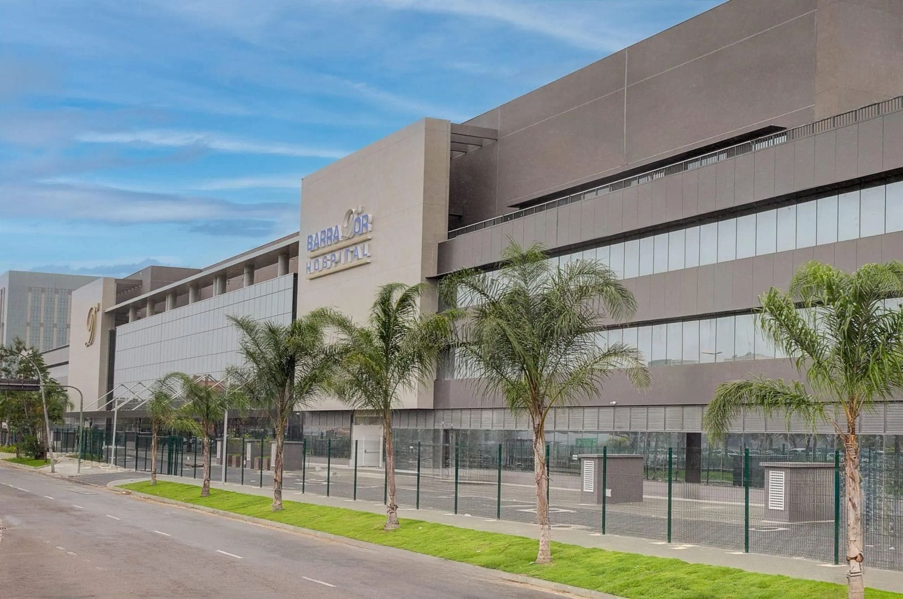

Bem-vindo ao Suporte da TI do Barra II
Este site foi desenvolvido com o objetivo de oferecer suporte à equipe de TI do Barra II, reunindo recursos essenciais para solucionar desafios específicos do dia a dia.
Aqui, você encontrará guias detalhados e soluções práticas para problemas recorrentes, promovendo um ambiente de aprendizado contínuo e fortalecimento das habilidades técnicas da equipe.
